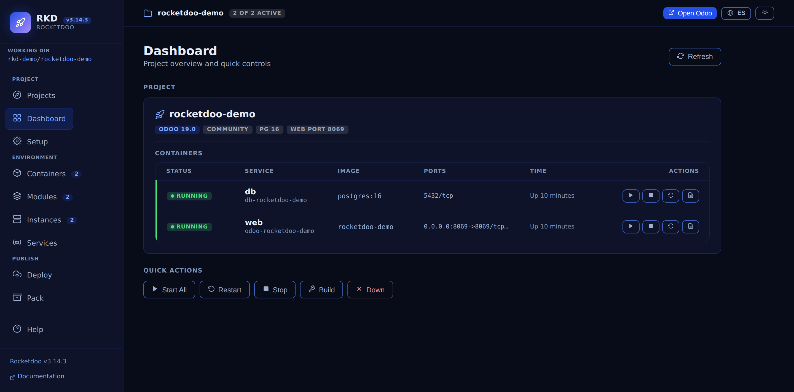
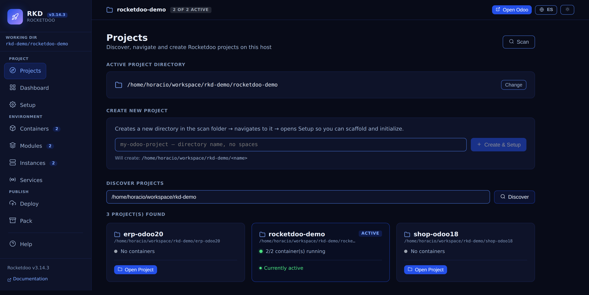
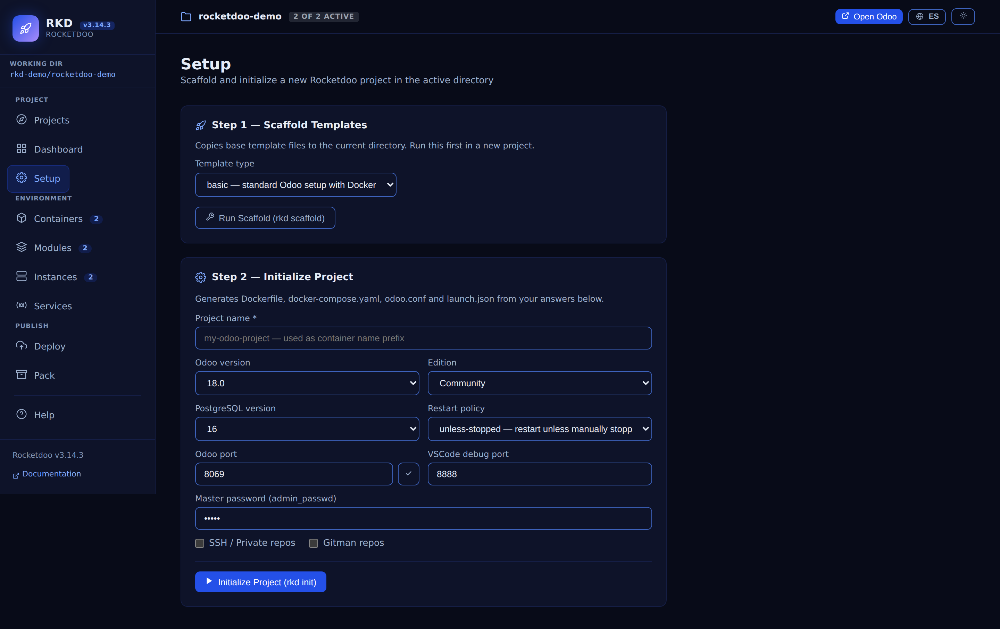
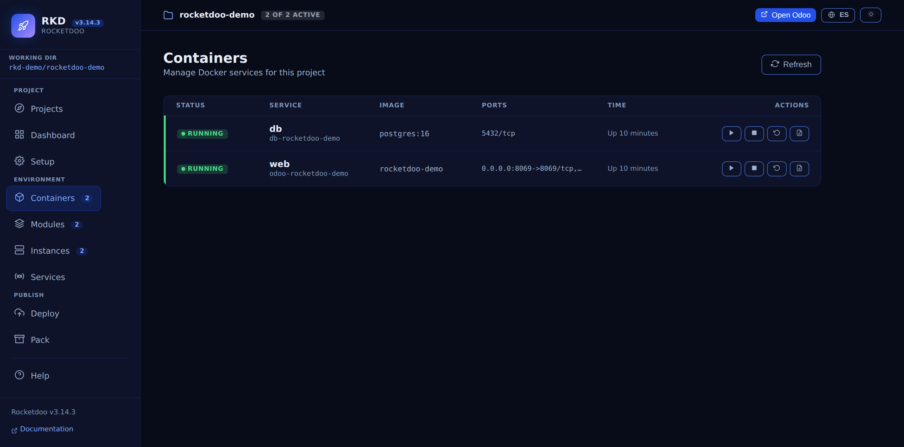
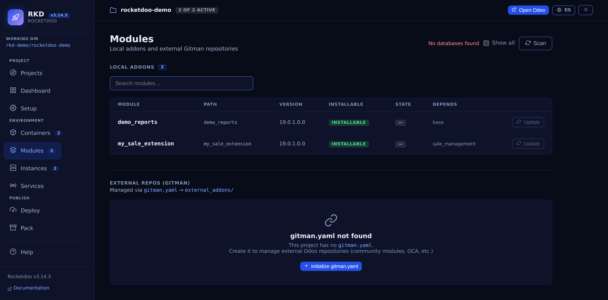
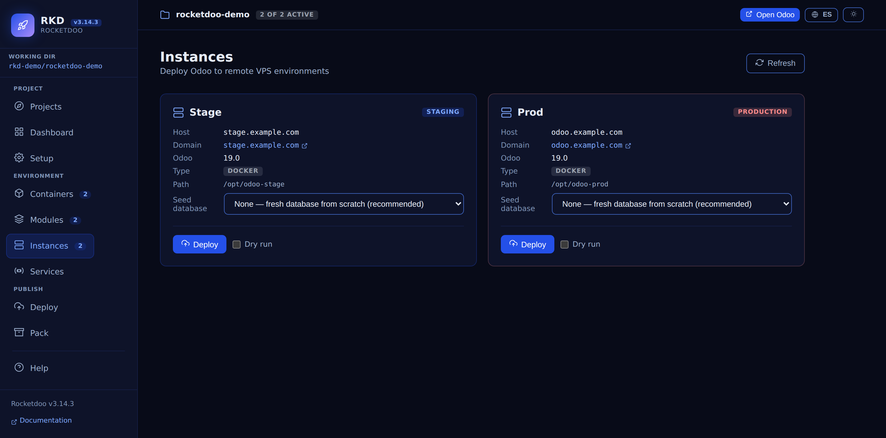
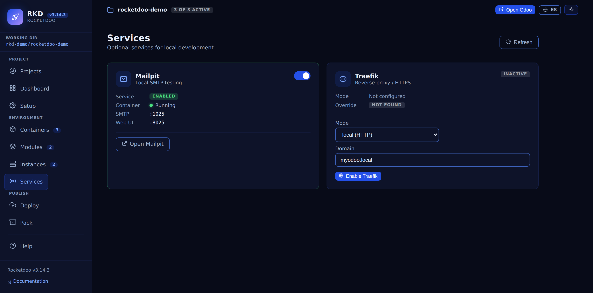
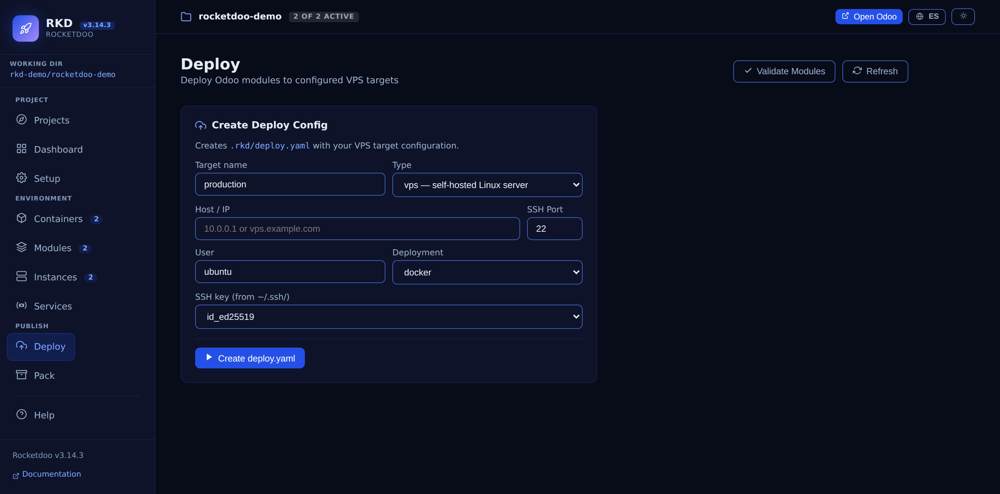
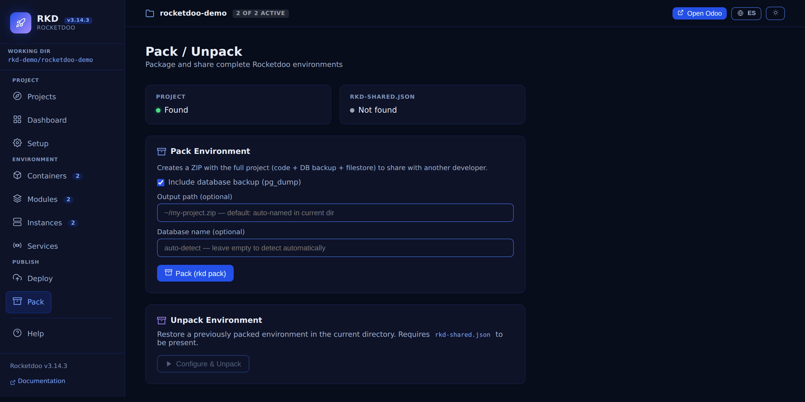
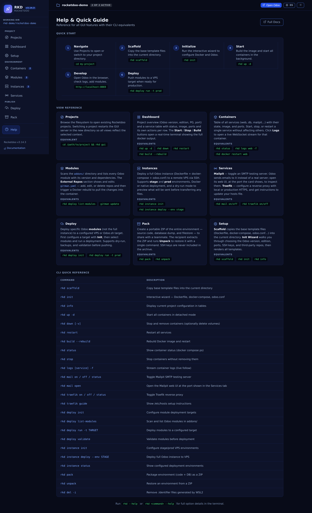

Graphical User Interface (GUI)
Rocketdoo ships a web-based Graphical User Interface that lets you manage your entire Odoo development environment from a browser — no Docker commands required.
Rebuilt in 3.5, sharpened through 3.14. A permanent top bar that always names the active project, grouped sidebar navigation, a Projects screen, a light theme that meets WCAG AA contrast, and a Spanish/English switch. Since then: a seed-database selector on Instances (3.14), real Mailpit ports on Services (3.9.1), an SSH key selector and the deployer's own log on Deploy (3.14.2 and 3.14.3), and an interface that no longer freezes while Docker works (3.14.3). Since 3.4 the API also requires a session token — see The session token, because it changes how you open the GUI.
Starting the GUI
Launch the GUI from your project directory:
Rocketdoo prints the URL you have to open. It carries a session token, and without it the GUI shows you nothing but a notice asking for one:
Open this URL (it carries the session token):
http://127.0.0.1:8070/?token=B0aITaQp0PaUQLodowmXCFGafXJtabZZQr-twSnxNIs
Press Ctrl+C in the terminal to stop the server.
Options
| Option | Description | Default |
|---|---|---|
--port |
Port to run the GUI server on | 8070 |
--host |
Host address to bind | 127.0.0.1 |
--open |
Open the browser automatically on that exact URL | false |
--cwd |
Project directory (if different from current) | current dir |
Examples:
rkd gui --port 9090 # Custom port
rkd gui --open # Open the browser on the tokenised URL
rkd gui --cwd /path/to/project # Specific project directory
The session token
Every rkd gui run generates a fresh token that lives only in the server's memory. The API
(/api/* and /ws/*) rejects any request that does not carry it: 401 over HTTP, and the socket
is closed for WebSockets. Three consequences worth knowing:
- Browsing to
http://localhost:8070on its own no longer gets you a working GUI. The page itself still loads —/,/healthand the SPA are exempt — but every call for data is refused, so it shows Session token required instead of failing silently. Use the printed URL, or--open. Since 3.8 that notice is not a dead end: it carries a field to paste the token into and a Use token button, which is what you need when the VSCode port notification sends you to the bare address. The browser tab remembers the last token that worked, for as long as the tab is open. - Restarting
rkd guiinvalidates the previous token. Old tabs stop working; reopen the new URL. - The token travels as a query parameter, so it can end up in your browser history. The full threat model is in SECURITY.md.
Interface overview

Three parts are always on screen:
- The top bar names the active project and shows a pill with how many containers are running
(
3 of 3 active), plus Open Odoo, the language switch and the theme switch. The full project path is in the tooltip of the project name. - The sidebar groups the ten screens into Project (Projects, Dashboard, Setup), Environment (Containers, Modules, Instances, Services) and Publish (Deploy, Pack), with a counter next to Containers, Modules and Instances. Help sits on its own at the bottom. The Working dir pill at the top is also the shortcut back to Projects.
- The main area holds the screen you selected.
Language and theme
Two buttons in the top bar:
- ES / EN switches the whole interface between Spanish and English. With no saved choice it
follows your browser language. What the GUI only relays is deliberately left untouched in either
language: Docker logs, addon names and versions, container and image names, and the raw status
from
docker compose ps(Up 3 hours). - The sun/moon button switches between the light and dark theme. With no saved choice it follows your operating system; once you press it, your choice persists across restarts. The screenshots on this page use the dark theme.
The screens
Projects

Find and move between Rocketdoo projects without restarting the server.
- Active project directory — what every other screen is acting on; Change picks another.
- Create new project — makes a directory and takes you straight to Setup.
- Discover projects — scans a folder recursively and lists every Rocketdoo project it finds, each with its container count and an Open Project button — the one you are already on says Currently active instead.
Dashboard
The project at a glance: Odoo version, edition, PostgreSQL version, web port and Gitman shown as compact pills, then the service table, then the quick actions (Start All, Restart, Stop, Build, Down).
The screen shows a single primary action depending on state: Open Odoo in the top bar when the Odoo container is running, Start All on the screen itself when it is not.
Setup

The rkd scaffold and rkd init wizard, from the browser: template type, project name, Odoo
version, edition, PostgreSQL version, restart policy, Odoo and VSCode debug ports, master password,
SSH/private repos and Gitman repos. Two buttons run the steps — Run Scaffold and Initialize
Project.
This form stops at Odoo 19. The version list in the GUI is fixed and does not yet offer Odoo 20, which the CLI has supported since 3.7. To create an Odoo 20 project, use the terminal —
rkd init --profile odoo20-ce— and then manage it from the GUI as usual. Everything else on this screen behaves like the CLI wizard.
Containers

The same service table as the Dashboard. Each row carries its own start, stop, restart and logs buttons; logs stream live over a WebSocket.
At narrow widths (around 1100px) the table needs horizontal scrolling to reach the Actions column.
Modules

Everything about addons in one screen:
- Local addons — every module under
addons/, with its path, version, whether it is installable and, picking a database in the DB selector, whether it is installed in that database. The Update button per module runs the update with a live log. - Nested modules are found too:
oca/web_responsivein the screenshot lives in a subdirectory, and since 3.5 Rocketdoo adds that subdirectory to Odoo'saddons_pathso it is actually reachable. - External repos (Gitman) — read and edit
gitman.yamland trigger a Docker rebuild.
Instances

A card per environment configured in .rkd/instance.yaml (stage, prod) with host, domain, Odoo
version, deployment type and remote path, plus Deploy and a Dry run checkbox.
New in 3.14. Each card also carries a Seed database selector:
None — fresh database from scratch (recommended), or one of your local databases to restore into that environment. Choosing one asks you to type the environment name before it is saved, and the warnings the pre-flight raises come back as notices on this screen. See Seeding an environment with a local database.
Services

The optional local services, together:
- Mailpit — the toggle enables or disables it, and the card reports the service state, the
container, the SMTP port and the web UI port, with a button to open it. Since 3.9.1 those are
the ports actually published, not a hardcoded
1025/8025, and the open link only appears when there is something to open. - Traefik — the current mode and whether the override file exists, with a mode selector (local HTTP / production HTTPS), the domain and Enable Traefik.
Deploy

Deploy modules to the targets configured in .rkd/deploy.yaml, with Validate Modules, Deploy
and a Dry run checkbox — the GUI equivalent of rkd deploy run. The form that creates
deploy.yaml picks the SSH key from a list of the keys in ~/.ssh/ (3.14.2) rather than asking
you to type a path.
Fixed in 3.14.3. Both buttons used to fail every time:
Deploycalled a method that did not exist and a wideexceptturned the failure into a cheerful200, andValidate Modulesshowed a red Validation errors card with an empty list for every project, including ones with no errors. Deploy now goes through the same entry point as the CLI — validation, backup, pre-flight check and rollback — and the panel shows the deployer's own timeline below the verdict.
Pack

Package the environment to share it (rkd pack) choosing whether to include the database backup,
the output path and the database name, or restore one you received with Configure & Unpack.
Help

A reference for every GUI feature next to its CLI equivalent, so moving between the two is a lookup, not a guess.
Notes
- The GUI drives your local Docker engine through the CLI — Docker has to be running for the container actions to work.
- Log streaming uses WebSockets; keep the tab open while you follow logs.
- No internet access is needed: everything runs locally.
- Changes made from the GUI (Mailpit, Traefik, Gitman) land in your project files right away
(
docker-compose.yaml,odoo.conf,gitman.yaml,.rkd/traefik.yaml). - Since 3.2 the API only accepts browser requests from the GUI's own origin — the host and port
it was started on, so
--portand--hostkeep working. Earlier versions accepted any origin: whilerkd guiwas running, any page you visited could list your filesystem and stop your containers. Binding to127.0.0.1was never protection against that, since the request comes from your own browser. Upgrade if you use the GUI. rkd gui --host 0.0.0.0is not the recommended setup. Exposed that way the token is the only barrier left, and it travels over plain HTTP.